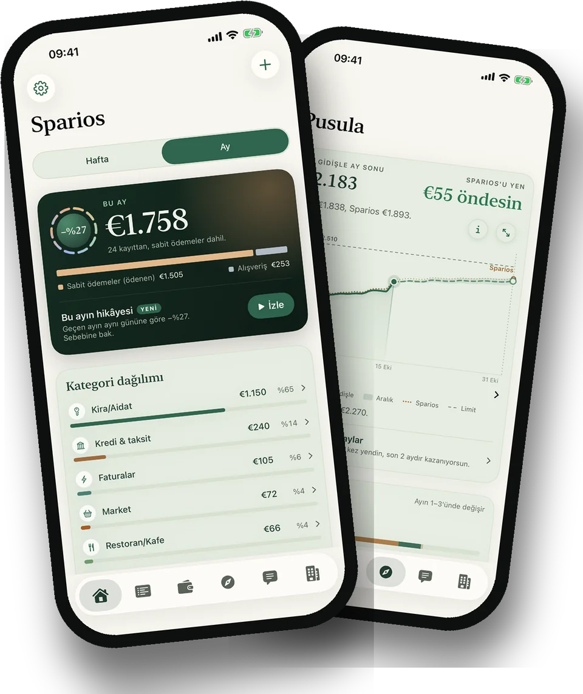
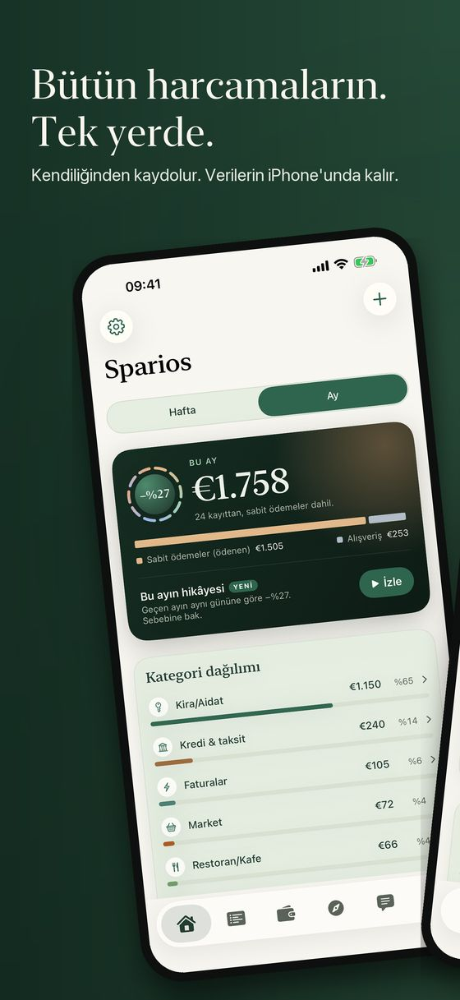
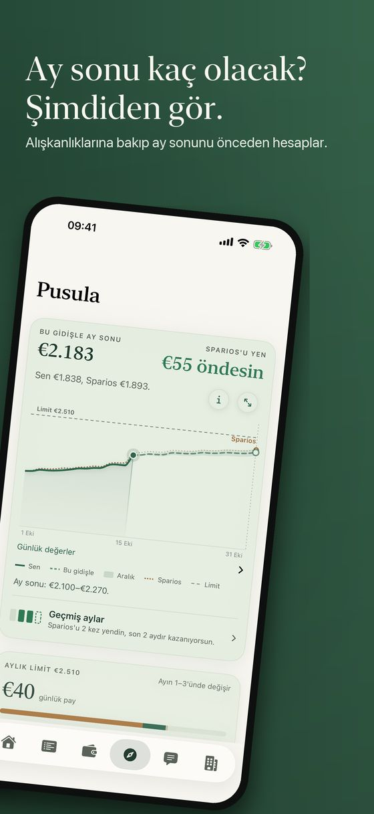
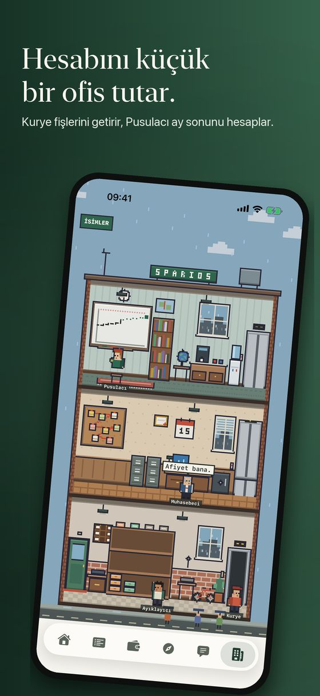
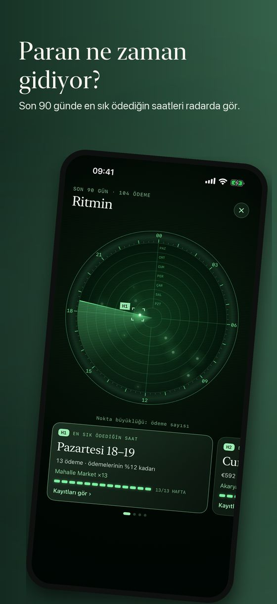
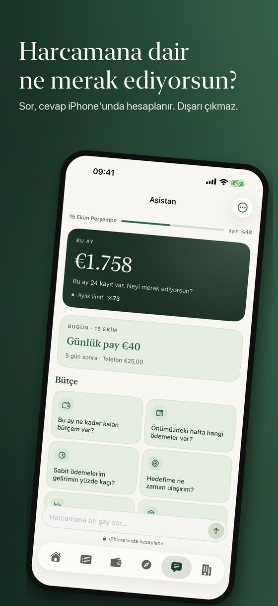
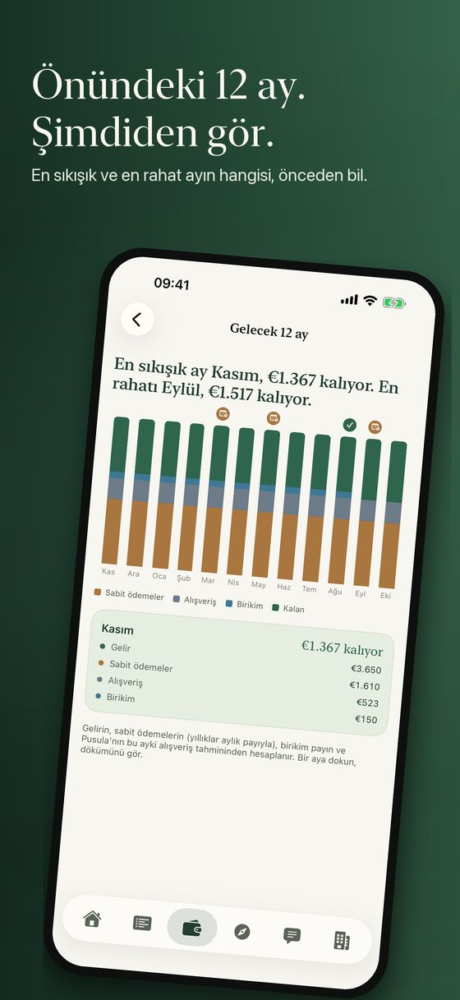
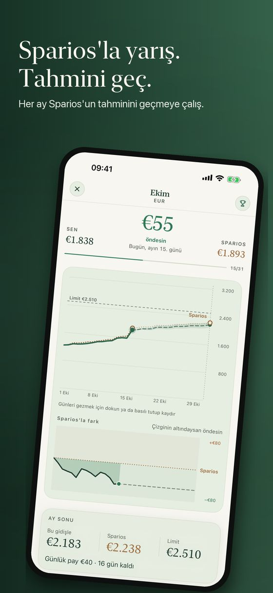
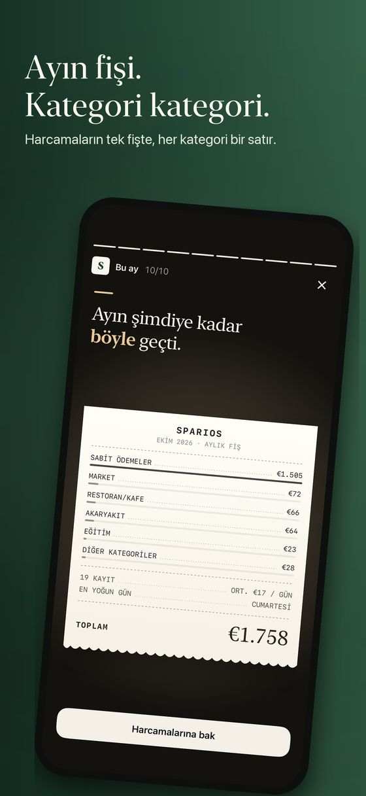

Her ödeme zaten yazılı
Kestirmeler’de bir kez otomasyon kur; her Apple Pay ödemen birkaç saniyede Sparios’a düşsün. Kira, fatura ve nakit de aynı listede.
Kendi kendine dolan bir harcama defteri. Wallet’taki hangi kartla ödersen öde, bu ay ne kaldığını gör. Banka girişi yok, hesap yok, hiçbir şey iPhone’undan çıkmaz.
Yakında App Store’da
Sparios








Kestirmeler’de bir kez otomasyon kur; her Apple Pay ödemen birkaç saniyede Sparios’a düşsün. Kira, fatura ve nakit de aynı listede.
Gelirini bir kez ekle. Kira ve abonelikler günü gelince düşer; ne kaldığını ve günlük payını hep görürsün.
Pusula ayın nereye gittiğini gösterir. Sparios her akşam kendi çizgisini çizer. Altında kalırsan ayı sen kazanırsın.
“Bu ay markete ne kadar harcadım?” Asistan kendi kayıtlarından, iPhone’unda cevap verir.
Beş piksel çalışan fişlerini getirir, dosyalar ve ay sonunu hesaplar. Ne yaptıklarını görmek için birine dokun.
Günde en fazla bir bildirim, akşam. Gece hiçbir şey yok. Kategoriyi bildirimden seçersin.